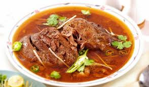

Cook mutton with onions, ginger-garlic paste, and nihari masala. Add water and simmer on low heat until meat is tender and gravy thickens. Garnish with lemon juice, coriander, and sliced ginger before serving.